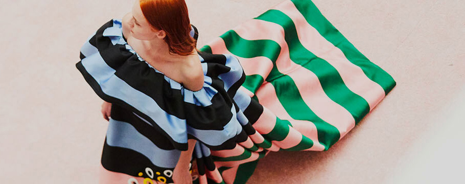
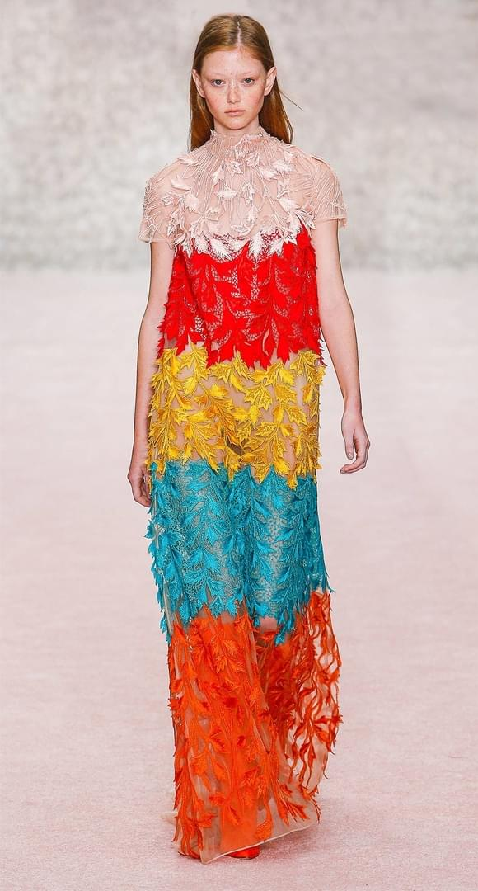

Carolina Herrera
Fashion Show

Well-traveled, fashionable couples with a keen eye for detail. They want to create the ultimate wedding experience, infused with thoughtfulness.
Usually, it's a multi-day marriage celebration at a meaningful, remote destination. They’re sourcing an elite team of wedding planners,
designers, and florists to help bring their dream wedding to life, visually and experientially.

Ready-To-Wear Collection
Girls in their teens and twenties can now buy into the label’s school girl-esque miniskirts and flouncy off-the-shoulder florals, while women of a more advanced age still have that Carolina Herrera signature tailoring and floor-length evening dresses. Despite the convergence of these two polar opposite styles, however, the elegance was still all there.
A Time For Women To Express Their Most Fabulous Selves
Carolina Herrera was always about sticking to her guns as the rest of the fashion world followed trend after trend. Now, after stepping down and giving the reigns to Wes Gordon, she’s opened the door to new possibilities for her label. These new possibilities include a more youthful consumer market courtesy of Gordon’s spring 2019 collection for the brand: a colorful and whimsical take on femininity that’s both young and mature.